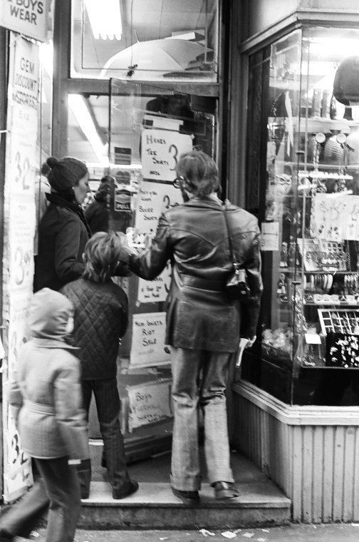

Roy Colmer 1935-2014 The Roy Colmer New York City doors photograph collection consists of the photographic prints used in Colmer's conceptual art piece, Doors, NYC (1976), which includes more than 3,000 images of doors taken in sequence on 120 intersections and streets of Manhattan, from Wall Street to Fort Washington. The collection is organized by intersection, block, and side of the street (even or odd numbers).


